Version 1.4.2 — Photo → 3D realistic banana with curl animation. A Blender 4.2+ extension by kaiser390.
koo_fruit_engine-1.4.2.zip.N), look for the Koo Fruit tab on the right edge.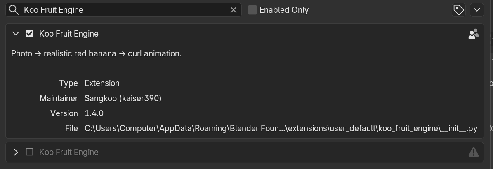
★ 🎲 cavendish → Load.1 to face the banana, Z to toggle material preview.You now have a ripe Cavendish banana. Continue reading for how to feed it a photo, peel it, or animate it.
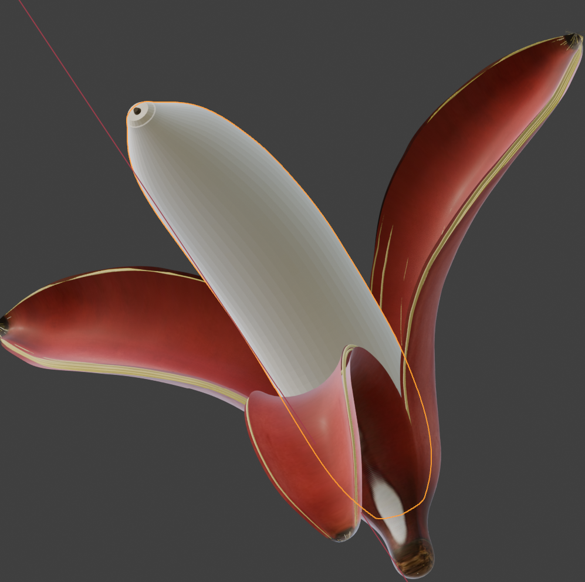
The entire addon lives in one N-panel section (N → Koo Fruit).
Top-to-bottom:
| Block | Purpose |
|---|---|
| Fruit Type | Which fruit recipe to use (Banana now; Apple / Pepper / Flower will auto-register as they're added). |
| Quality / Preset | Mesh density (LOW / HIGH) and preset dropdown with Load / Save / Save as… |
| 📷 Realistic | 🎲 Stylized | Workflow tabs — switch input mode |
| Image Source / Shape+Color | Tab-dependent: photo + markers (Realistic) OR slider stack (Stylized) |
| Generate | The build button. Plus 📌 Pin and debug helpers. |
| Deform (Realistic only) | Reshape markers: length × / radius × / curvature Δ |
| Peel | Open the peel, slide strip amounts + curl |
| Animation | Keyframe the waterfall-close peel animation |
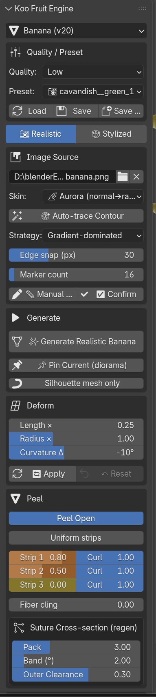
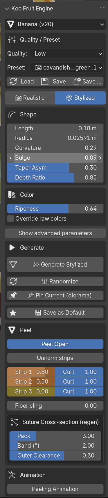
Produce a banana that matches a photograph pixel-for-pixel.
N-panel → Image Source → click the photo path field → pick your image. An Image Editor opens automatically with the photo and 48 silhouette markers + 10 control markers placed in an ellipse around it. For small or simple shapes, drop Silhouette Markers down to 12–16 before loading.
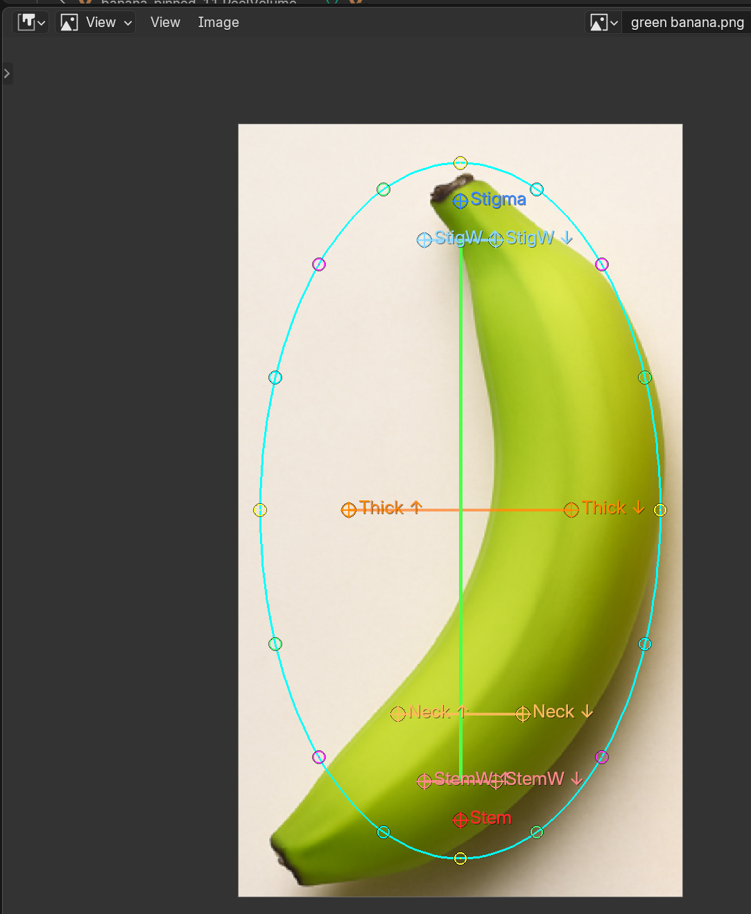
Two options — pick whichever snaps to your photo better:
| Strategy | Best for |
|---|---|
ARCHETYPE |
Clean photos — PCA + bin extrema, filters watermarks/shadows |
ARCHETYPE_SNAP |
Default. Archetype + gradient edge snap |
HYBRID |
Saturation mask + edge snap — more detail but noise-prone |
SATURATION |
Fastest, lowest accuracy. Debugging baseline |
GRADIENT_ONLY |
Matte fruit on noisy background — saturation seed + aggressive gradient pull |
Leave Edge snap at 30 px for most photos; raise when the auto-trace starts far from the true edge.
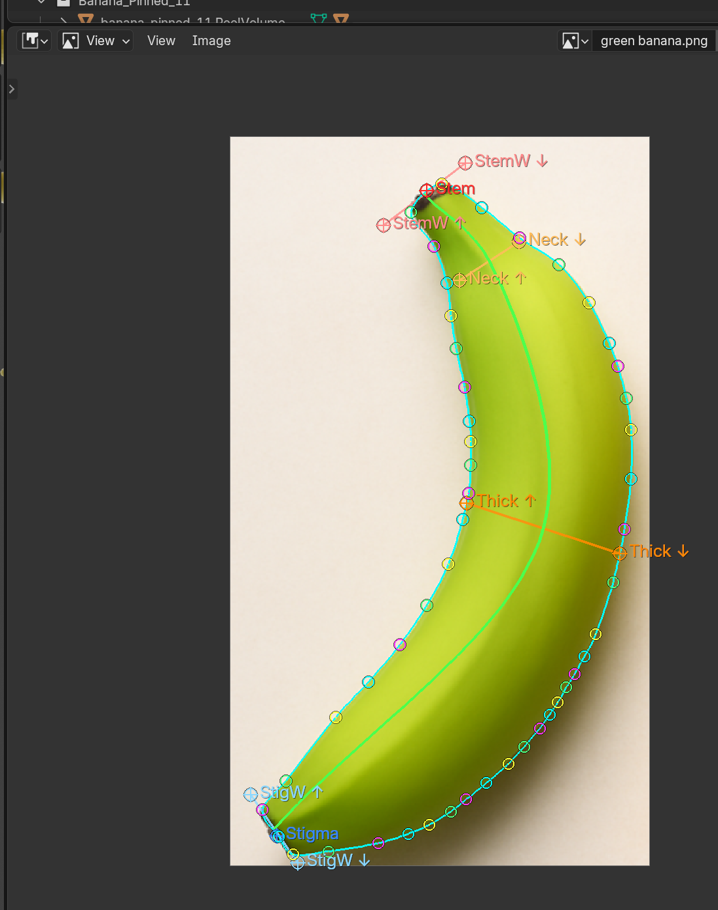
Enter to exit.
Use this to nudge markers that auto-trace placed wrong, or to trace from scratch on tricky photos.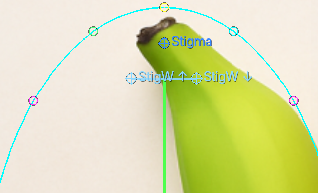
Once the silhouette matches the banana, click ✅ Confirm.
The button turns red with * whenever markers have moved without a fresh Confirm — that's your "pending" signal.
Skin dropdown in the Image Source block:
| Mode | What you get |
|---|---|
STRIP |
1D saturation-weighted colour strip wrapped around the banana. Photo-accurate pigment, but photo shadows/highlights are discarded — Blender's own lighting re-shades the mesh. Recommended for stock photos with obvious studio lighting. |
FULL |
Planar-XZ UV maps every pixel of the photo onto the mesh. The banana looks exactly like the photo from the matching camera angle. Use for 1:1 reproduction; every pixel — including the photo's own lighting — prints onto the surface. |
AURORA |
Emission material driven by surface normals. Rainbow gradient — great for "banana lamp" or curvature visualisations. No photo needed. |
N-panel → Generate box → ✨ Generate Realistic Banana.
Blender thinks for a few seconds (LOW quality: ~4 s, HIGH quality: ~12 s) and your banana appears at the origin. Numpad 1 to align with the photo view.
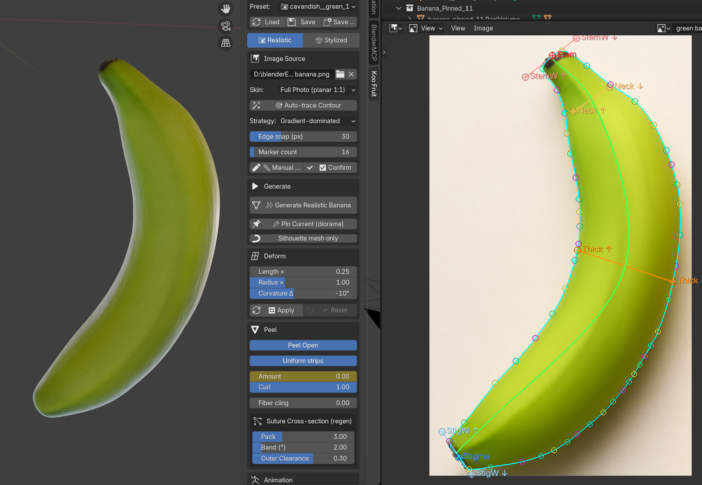
Any time you drag a marker or change the skin mode, click Generate again. The addon clears the previous banana.* objects and builds fresh.
No photo, no markers — pure parametric. Use when you want a clean banana of a particular cultivar, variations via randomize, or preset-driven default bananas.
Switch to the 🎲 Stylized tab.
Quality / Preset dropdown → pick any 🎲 preset (Cavendish, Blue Java, Gros Michel, Lady Finger, Manzano, Plantain, Red Banana, Burro) → Load.
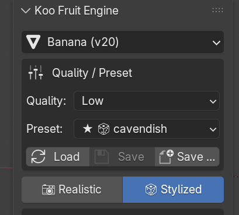
A 📷 Photo → Stylized (keep skin) button appears at the top of the Stylized tab whenever a photo + markers are loaded. It measures the silhouette, copies the geometry into the Stylized sliders, and rebuilds on the parametric pipeline while keeping the photo strip texture as the peel skin. Used for "edit my photo banana with sliders" workflows.
Hero: Length / Radius / Curvature / Bulge / Depth Ratio — always visible. Advanced (toggle "Show advanced parameters"): Bend Peak, Stem Extension, Shoulder (pedicel / blossom) Position + Sharpness, Carpels, Belly Eccentricity, Ovality + Folds.

Hero: 🎨 Color Style palette dropdown — Random / Olive / Berry / Wood / Space / Pastel / Metallic. Picking one rerolls the colour identity and rebuilds. Advanced: Override raw colors unlocks per-layer pickers — Outer / Inner, Tip + Tip Reach, Pulp / Warm, Membrane / Spot.

Thickness (%) of body radius (banana-size invariant — same value reads correctly on any cultivar). Suture Ridge (%) of peel thickness — the raised lines that follow the 3 carpels.

Bundle Count / Thickness — number and thickness of the phloem fiber tubes inside the peel. Seed Density — number of seed specks along the teardrop axes.

Peel Roughness / Bump Amount / Bump Scale / Micro Noise — material gloss + procedural surface texture.

Include checkboxes: ☐ Interior / ☐ Pulp / ☐ Membrane control which primitives are built. Unchecked → that part is not generated at all (faster Generate, smaller scene, cleaner FBX export). Toggle them off for peel-only / pulp-only variants.
✨ Generate Stylized — builds the banana from current sliders. 🎲 Random Generation — rolls every advanced slider to plausible-banana values and builds immediately. One click = new fruit. Bundle count + thickness intentionally NOT randomized (quality choices, not visual identity).

Everything else in the JSON schema (~40 more parameters — tube radii, honey bezier controls, per-primitive roughness, SSS settings) stays file-editable. See §12 Advanced — JSON-editable parameters.
The Peel block appears after Generate. Works in both tabs.
Toggle Peel Open to enable peel interaction. Three strip sliders appear:
| Slider | What it does |
|---|---|
| Strip 1 / 2 / 3 Amount | How far each of the three peel strips is pulled back (0 = closed, 1 = fully peeled to the stem anchor) |
| Curl | Per-strip curl amount — controls how tightly the peeled strip rolls up |
| Fiber cling | 0 = fibers curl with the peel; 1 = fibers stay on the flesh |
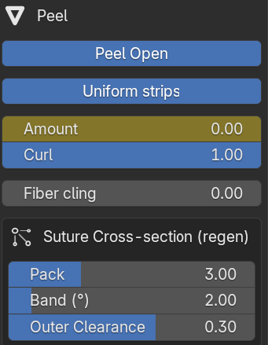
Turn on Uniform strips to drive all three strips with one Amount + Curl pair. Fast way to open the whole peel symmetrically.
Only shows when the peel is open. Three knobs control the bundle pack that shows at the torn edge:
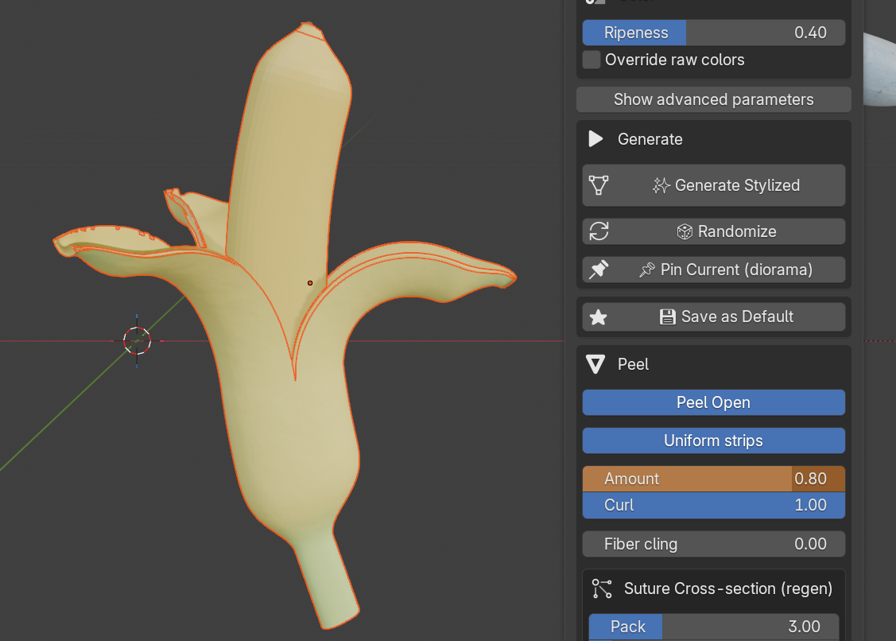
Animation block → toggle Peeling Animation.
Keyframes install immediately on the three strip-amount sliders and the timeline jumps to [1 .. F_end].
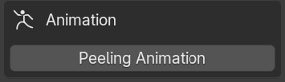
The built-in scenario is a cascade open + simultaneous close:
Default phase = 20, close = 20 → total 80 frames. Adjust the two sliders and the keyframes re-install automatically.
Press Spacebar in the 3D viewport or the Timeline's ▶ Play to watch.
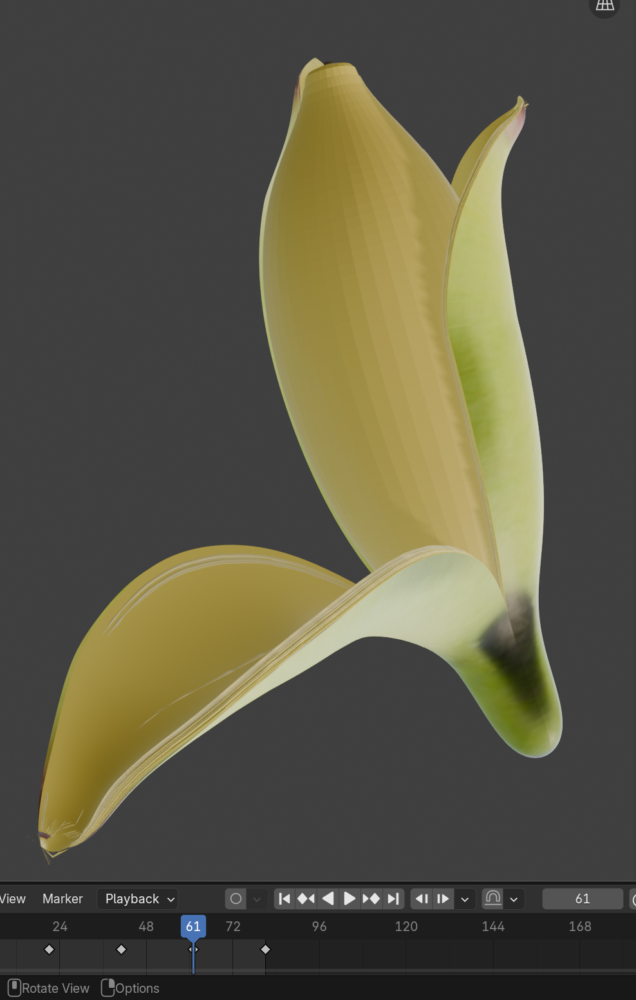
Turn the toggle off to remove the keyframes — sliders become static again.
Only in the Realistic tab, since it transforms markers. The sliders apply to the markers and rebuild the silhouette — so the photo UV re-projects onto the new outline, no stretch artefact.
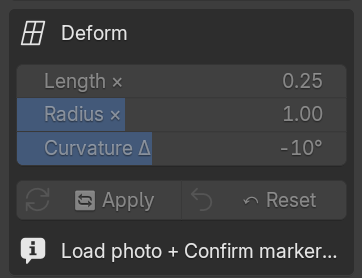
| Slider | Meaning |
|---|---|
| Length × | Scale along the stem→stigma axis (0.5–2.0 soft range) |
| Radius × | Scale perpendicular to the axis (same range) |
| Curvature Δ | Additional bend on top of the photo's natural curvature |
All three are relative to the original markers captured on the first Apply — sliders at 1 / 1 / 0 = no change.
🔄 Apply transforms markers and rebuilds. Baseline is captured automatically on the first Apply.
↶ Reset restores the original markers and resets the sliders.
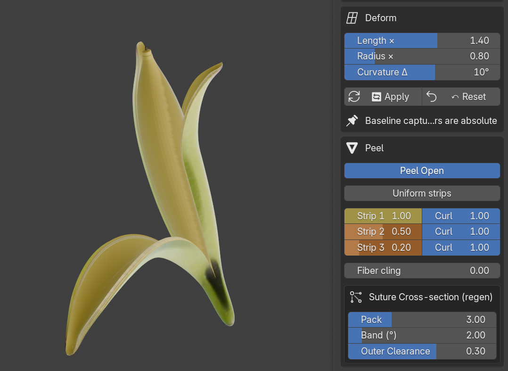
The addon builds one active banana at a time (each Generate clears the previous banana.* objects). To keep multiple bananas in the scene side-by-side — for a variety pack render, say — use 📌 Pin Current.
banana.* object is renamed to banana_pinned_1.*, moved into a new Banana_Pinned_1 collection, and translated aside along +X.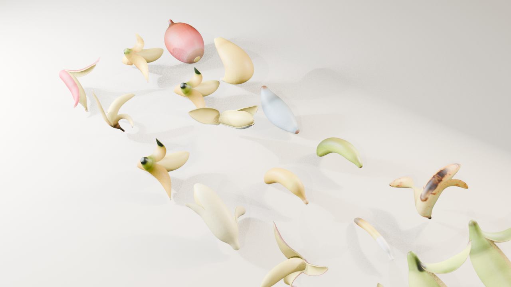
banana.. But the next Generate will clear it, so save a preset first.Quality / Preset block at the top of the panel. Every preset is a JSON file that captures the full parameter state + (for realistic presets) the markers and photo path.
| Prefix | Meaning |
|---|---|
★ |
Built-in preset (locked, can't overwrite — fork via Save as…) |
🎲 |
Parametric preset (Stylized-friendly) |
📷 |
Has markers + photo block (Realistic-friendly) |
Built-in examples: ★ 🎲 cavendish, ★ 📷 realistic_red_banana.
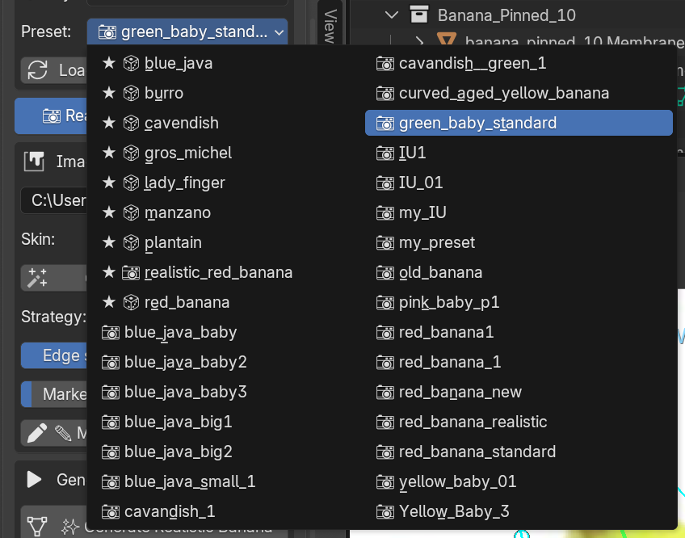
| Button | Action |
|---|---|
| Load | Apply the selected preset to the scene |
| Save | Overwrite the currently selected user preset (disabled for built-ins) |
| Save as… | Write to a new name |
Found at the bottom of the Stylized tab. Writes the current state to the well-known user_default preset slot. Reload any time via the dropdown to return to your personal default banana.
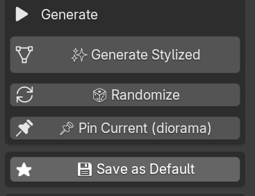
On highly-curved bananas this can happen at the narrow stem neck. Workaround: in the Realistic tab, drag the Neck markers slightly into the body (toward the thick midpoint). That shrinks the pulp's axial range so it stays clear of the narrow region.
The planar-XZ UV is mirror-symmetric about the Y axis by design — the back gets the mirrored photo. From the camera angle that shot the original photo, this is invisible. If you render from the opposite side, expect mirrored pigment.
Fixed in v1.3. If you still see it, make sure the preset was saved in v1.3+ (it'll have markers_version in its JSON).
Drop Quality from HIGH to LOW — still production-grade mesh density (48 × 60 rings, 60 bundles).
See §12 Advanced — JSON-editable parameters.
Blender 4.2+ is required. For 4.2 LTS you may need to enable "Extensions" in Preferences first.
The N-panel exposes ~22 curated hero parameters. The JSON preset schema defines ~60+ more. To edit them:
%APPDATA%/Blender Foundation/Blender/5.0/config/fruit_engine/presets/<name>.json, then Load from the dropdown.Full UI-vs-JSON mapping table:
docs/stylized_params_advanced.md
Each preset value corresponds to a registered parameter in
addon/koo_fruit_engine/data/parameters/banana.json
— same schema for every fruit archetype.
GPL-3.0-or-later — © 2026 kaiser390 (kaiser390@naver.com)
Built on Blender's extensions system (4.2+). Uses numpy only — no other runtime dependencies.
Feedback, bug reports and preset contributions welcome at the project's repository.